Tomakomai
Tomakomai · Hokkaido
Tomakomai
Highlighted on the Hokkaido map.
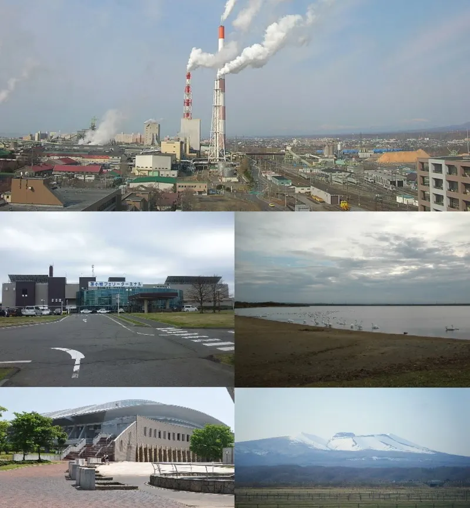
Stay
コンフォートホテル苫小牧
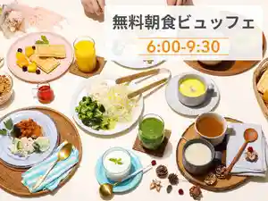
Konfootohoteru Tomakomai
くつろぎの湯 苫小牧 ホテル杉田
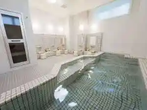
Kutsurogino Yu Tomakomai Hoteru Sugita
スマイルホテル苫小牧
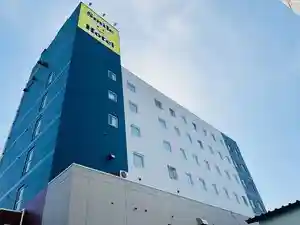
Sumairuhoteru Tomakomai
天然温泉 樽前の湯 ドーミーイン苫小牧(R8年2月1日リニューアル)
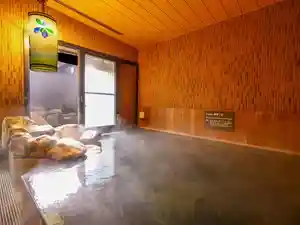
Tennen Onsen Tarumai No Yu Doomiiin Tomakomai (R8 Nen 2 Gatsu 1 Nichi Rinyuuaru )
グランドホテルニュー王子
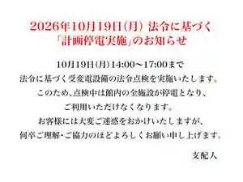
Gurandohoterunyuu Ouji
ホテル苫小牧グリーンヒルズ苫小牧駅前（ＢＢＨホテルグループ）

Hoteru Tomakomai Guriinhiruzu Tomakomai Ekimae ( B B H Hoteruguruupu )
KOKO HOTEL 苫小牧
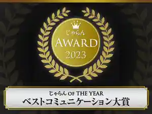
Koko Hotel Tomakomai
東横ＩＮＮ 苫小牧駅前
Touyoko I N N Tomakomai Ekimae
ホテルルートイン苫小牧駅前
Hoteruruutoin Tomakomai Ekimae
ＨＯＴＥＬ Ｓｔａｙ Ｖｉｌｌａｇｅ
H O T E L S T A Y V I L L A G E
ビジネスホテル モトナカノ
Bijinesuhoteru Motonakano
新苫小牧プリンスホテル「和～なごみ～」
Shin Tomakomai Purinsuhoteru ( Wa ~ Nagomi ~ )
Dining
1985年創業 苫小牧老舗焼肉 金剛園 本店
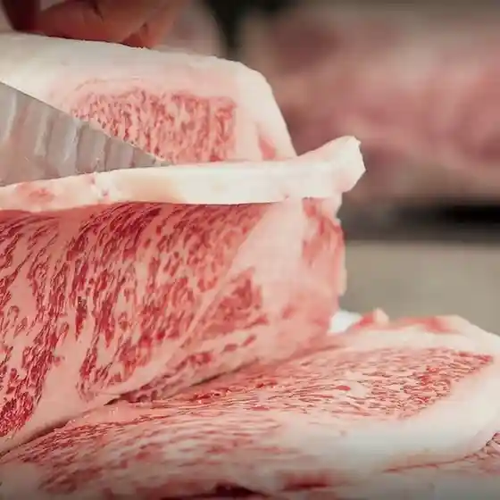
1985 Nen Sougyou Tomakomai Shinise Yakiniku Kongou Sono Honten
創作鉄板 海音
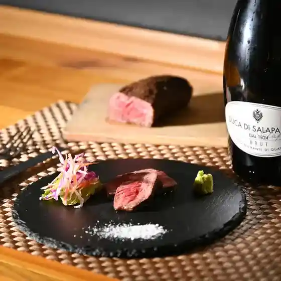
Sousaku Teppan Kaion
食彩処 樽俎
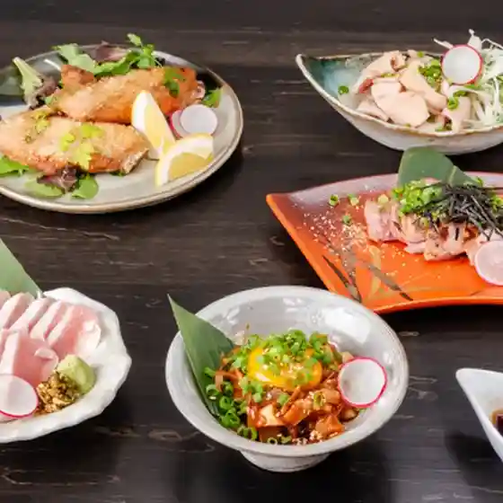
Shokusai Tokoro Sonso
海鮮酒場 一分銀
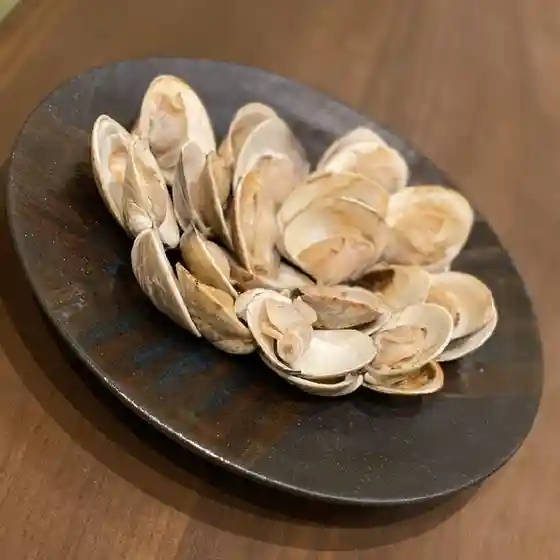
Kaisen Sakaba Ichibu Gin
ジンギスカン鷹
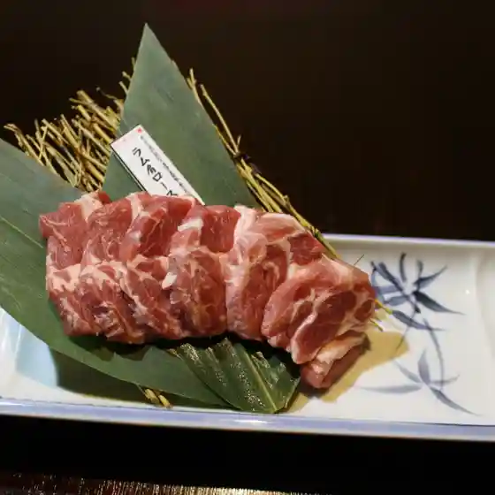
Jingisukan Taka
北海道成吉思汗 羊楽園
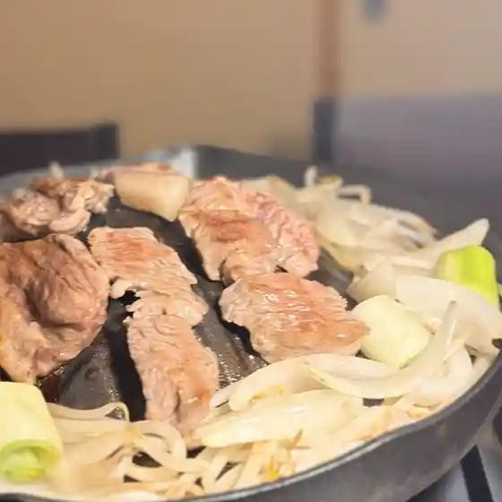
Hokkaidou Jingisukan Hitsuji Rakuen
炭焼牛たん 赤兵衛分店
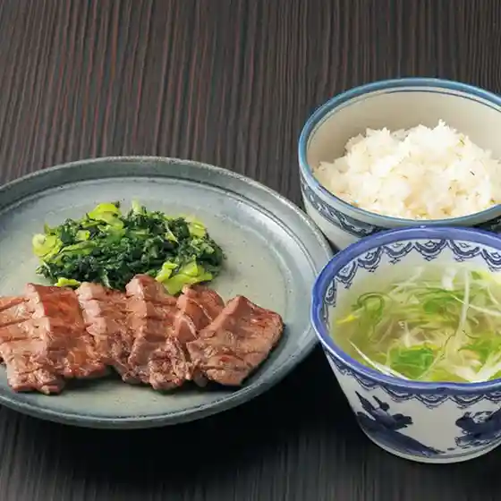
Sumiyaki Ushi Tan Aka Bee Bunten
山の猿 苫小牧柳町店

Yama No Saru Tomakomai Yanagimachi Mise
和伊ん場
Wa I N Ba
やきとり鳥栄
Yakitori Tori Sakae
鮨処魚徳
Sushi Tokoro Sakana Toku
海鮮炭火焼居酒屋 八福
Kaisen Sumibi Yaki Izakaya Hachi Fuku
山の猿 苫小牧日新町店
Yama No Saru Tomakomai Nisshin Machi Mise
せきはら
Sekihara
海へ 苫小牧店
Umi He Tomakomai Mise
春夏秋冬 活魚料理 北海
Shunkashuutou Ikeuo Ryouri Hokkai
ピッツァ＆カフェ ノヴィータ
Pittsua & Kafe Noviita
串と肴 まる人
Kushi To Sakana Maru Nin
千年の宴 苫小牧表町2丁目店
Sennen No Utage Tomakomai Omotechou 2 Choume Mise
香るつけ蕎麦 蕎麦花 王子町店
Kaoru Tsuke Soba Soba Hana Ouji Machi Mise
銀ちゃん
Gin Chan
樂食中華 孝
Rakushoku Chuuka Takashi
センチュリー
Senchurii
笑楽囲処せつ
Warai Raku I Shose Tsu